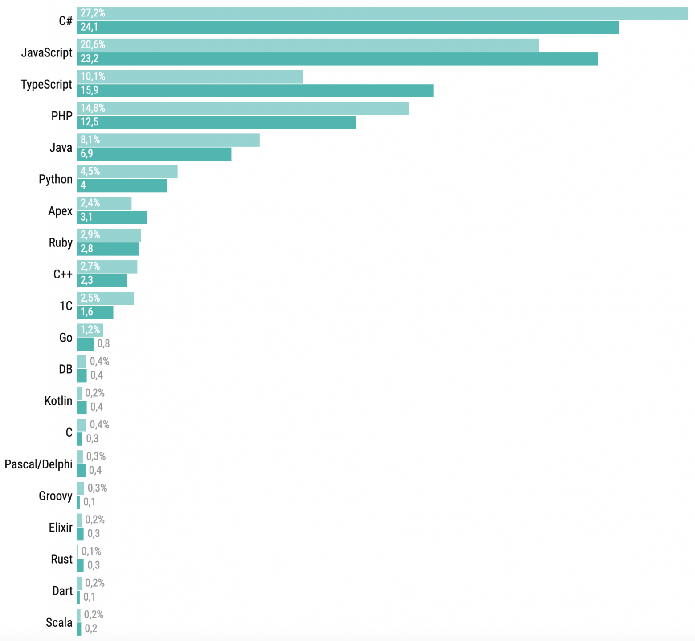

Информация взята с habr.
Рейтинг ЯП 2023
Рейтинг языков программирования показал, что JavaScript и TypeScript уже контролируют треть рынка. Java пятый год подряд теряет популярность. Python после нескольких лет негативной динамики в этом году набирает обороты.
Представляем результаты ежегодного опроса, данные и скрипты обработки можно найти на GitHub.
Коммерческое использование
В этом году самым популярным языком остается JavaScript — 19% разработчиков пишут на нем коммерческие проекты. Далее — Java (14%) и Python (13%). Последний впервые среди самых популярных. С минимальным отрывом за Python идут C# и TypeScript.
Первое что бросается в глаза — стремительный рост популярности TypeScript. При этом это не только миграция JavaScript проектов, так как JavaScript тоже стали использовать чаще. Экосистема занимает новые ниши. Как мы увидим позже, TypeScript все больше становится языком выбора для новых проектов как на Back-end, так и в Full Stack разработке. Кроме того, резко выросла популярность Python, который занял третье место после трехлетнего спада. Возможно, это связано со второй волной интереса к анализу данных.
Сферы использования
Интересно, что на бэкенде выросла доля как TypeScript, так и JavaScript (хотя основным языком все еще остается Java), TypeScript уже используют чаще, чем JavaScript. Доля PHP сокращается, но язык все еще входит в тройку самых популярных, вероятно, Python заменит его в следующем году.
Во фронтенде все довольно ожидаемо, однако становится заметной доля фронтендов на C# (Blazor) и Dart (Flutter Web). Видно, что переход с JavaScript на TypeScript все-таки происходит.
В сфере анализа данных Python остается вне конкуренции. Удивляет рост доли R и отсутствие заметной доли языка Julia.
Основной сегмент фуллстек-разработки еще на C# с ASP.NET, но сектор JavaScript/TypeScript суммарно уже больше. Распределение далее в целом показывает те же тенденции, что и в бэкенде.
Сфера мобильной разработки приносит нам некоторые неожиданности, такие как одновременный рост доли Kotlin и сокращение доли Swift, что отражает соотношение разработки на Android и iOS. Еще интересно, что Flutter теперь используют чаще, чем React Native, в сегменте мультиплатформенных мобильных приложений.
В области DevOps основным языком, как и раньше, является Python. Ну и Embedded-разработка довольно консервативна. Как и раньше, большинство проектов написаны на C и C++, но видно, что с ростом мощности встроенных систем появилось место и для Python. Еще небольшой сегмент Embedded-разработки на Java — микрокарты — сейчас почти исчез.
Рейтинг языков программирования по сферам использования
Back-end
Front-end
Full Stack
Data processing
Mobile
Примечательно, что изменилось распределение между специализациями: стало больше фронтенда, анализа данных и поддержки операций за счет сокращения бэкенда и фуллстек-разработки.